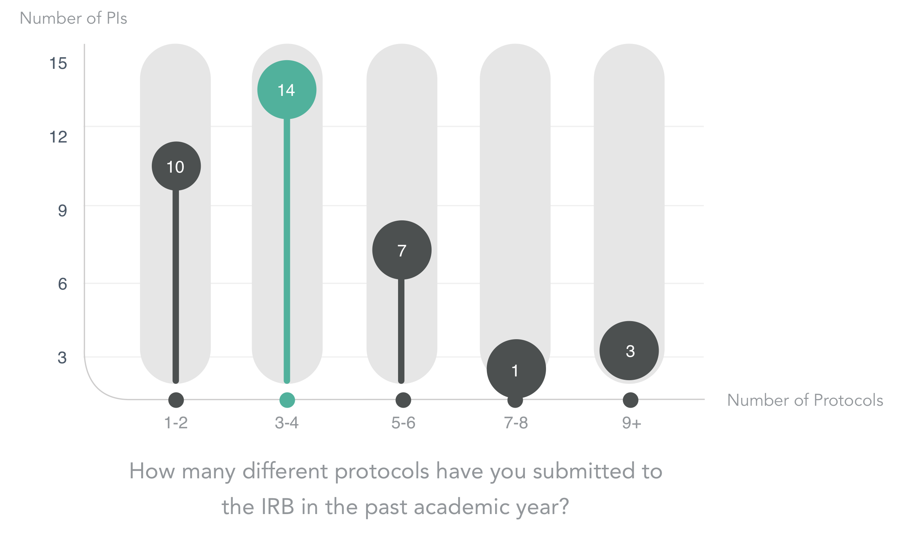

Purdue IRB Journey Mapping
For my capstone project at Purdue University, I worked in a small team to address a rising concern amongst the Purdue Institutional Review Board (IRB). This is a group focused on protecting the rights and welfare of human subjects in research studies.
The concerns at hand were the slow manner in which those submitting research proposals, referred to as the Principal Investigators, were being approved. This was causing tension between Purdue professors performing research, and the IRB. See below a visual our team created to show the issues in workflow.
After our project kickoff and a few follow-up meetings with our project sponsor, we decided to utilize service design methods to aid the IRB in understanding their user's frustrations and address them.
From this point we were able to immediately begin gathering qualitative and quantitative data from professors around campus. We first sent out a overview survey, which then led to in-person and remote interviews.
PI proposal submission results
The results from our survey and interviews led us to the first step in creating our journey map: persona development. Our team decided on one primary persona, and two secondary. See the primary persona below.
At this point, our team was beginning to start pulling the data and information given to us into a touchpoint journey. With the journey being tailored to the primary persona.
Many brainstorming and sketching sessions later, we had landed on the main touchpoints and overall layout we wanted to use for our journey map.
Once adding color, typography and iconography to the journey map, we went through a few iterations. First, we were focused on using a more "cool" color scheme. Upon working with our project advisor, we realized the colors did not accurately petray what the user's emotions actually were at the touchpoint shown.
Below is a final version of the journey map, with focus on the touchpoints and general satisfaction level found at each one.

Built in Adobe Illustrator
Along with the personas, research data and journey map, our team handed off a list of suggested next steps for the IRB to take. Our team presented all the material to the entire IRB team and Department of Computer Graphics to close out the project.